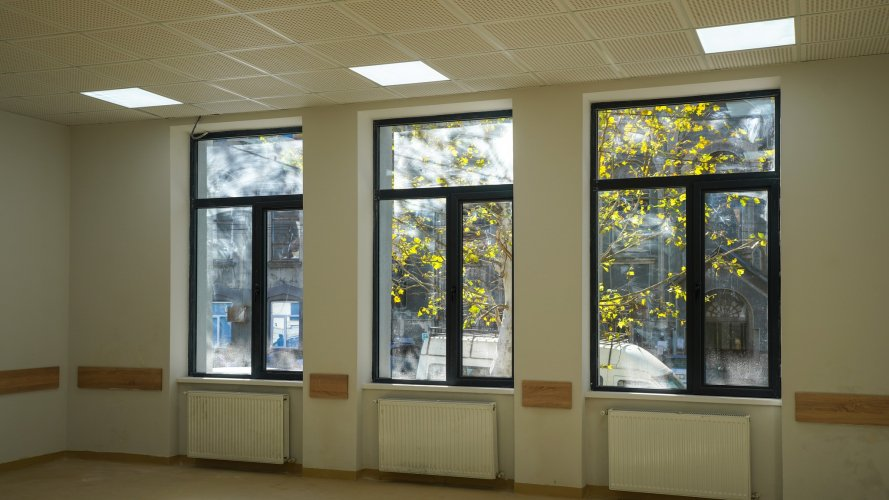
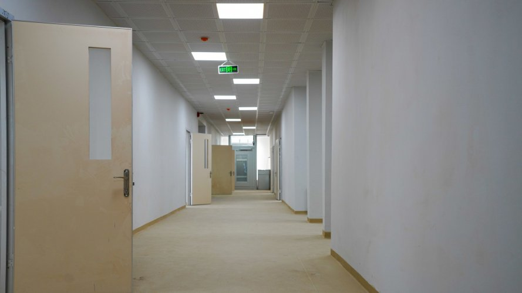
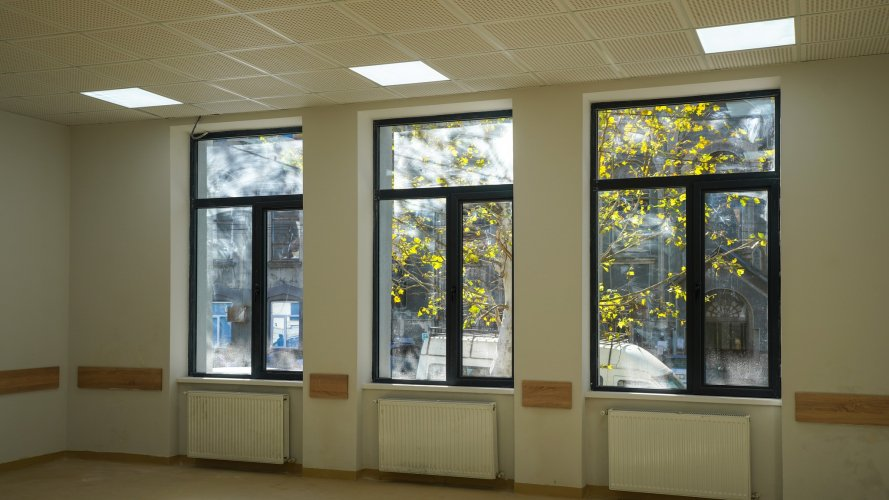
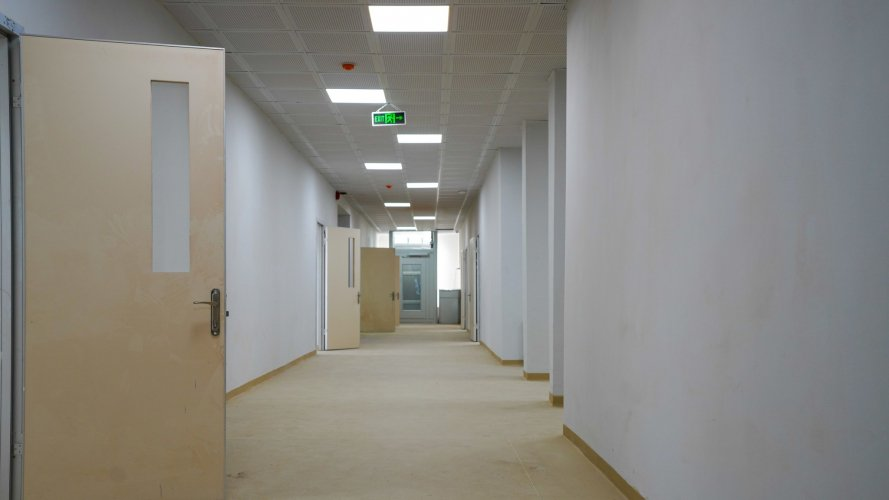

ძალადობის წინააღმდეგ ჩატარებული კამპანია


კამპანია ძალადობის წინააღმდეგ ქუთაისის ს.ს.ი.პ #9 საჯარო სკოლის მე-11 კლასის მოსწავლე, ქუთაისის ახალგაზრდული კლუბის წევრი ვახტანგ ჩიხლაძე, ახალგაზრდულ კლუბთან ერთად მონაწილეობდა 16 დღიან საერთაშორისო კამპანიაში ძალადობის წინააღმდეგ. ვახტანგ ჩიხლაძემ ქუთაისის ს.ს.ი.პ #9 საჯარო სკოლის მე-10 კლასის მოსწავლეებს საინფორმაციო შეხვედრაზე აჩვენა მოკლემეტრაჟიანი ფილმები ძალადობის შესახებ, გამართა დისკუსია ძალადობის თემაზე. შეხვედრაზე ახალგაზრდებმა დააფიქსირეს საკუთარი პოზიციები და ერთხმად დაგმეს ყოველგვარი ძალადობა. ძალადობის წინააღმდეგ კამპანიის ფარგლებში კლუბის წევრები სხვადასხვა სახის აქტივობებს ანხორციელებენ.